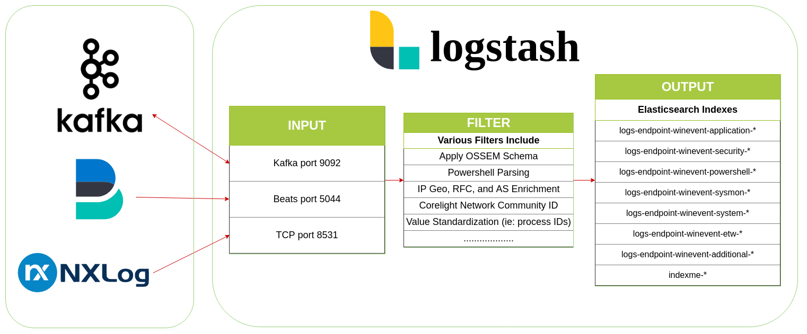

    <main class="jupyter-page">
    <div id="page-info"><div id="page-title">Logstash</div>
</div>
    <div class="jb_cell">

<div class="cell border-box-sizing text_cell rendered"><div class="inner_cell">
<div class="text_cell_render border-box-sizing rendered_html">
<p></p>

</div>
</div>
</div>
</div>

 


    </main>
    